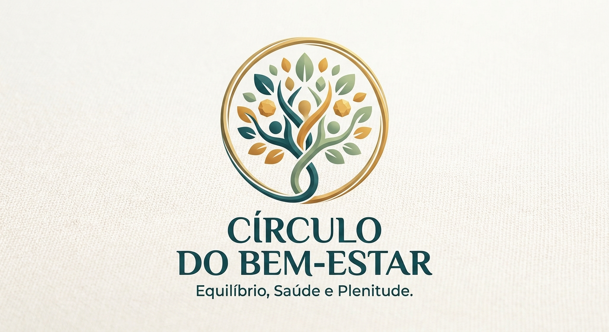

CONHEÇA QUEM ACOLHE
Perfil do voluntário
Informações demonstrativas para ajudar você a conhecer uma opção de apoio antes de agendar.

Círculo do Bem-Estar
Grupo de apoio
Rotina e autocuidado
SOBRE O GRUPO
Um espaço para cuidar da rotina
O Círculo do Bem-Estar oferece um espaço de apoio e troca de experiências sobre rotina, autocuidado e bem-estar. Este perfil é fictício e faz parte da apresentação acadêmica.
Disponibilidade
Domingo
Atendimento
Online
Como o grupo pode ajudar
- Conversas sobre rotina e autocuidado
- Troca de experiências entre participantes
- Compartilhamento de hábitos para o bem-estar